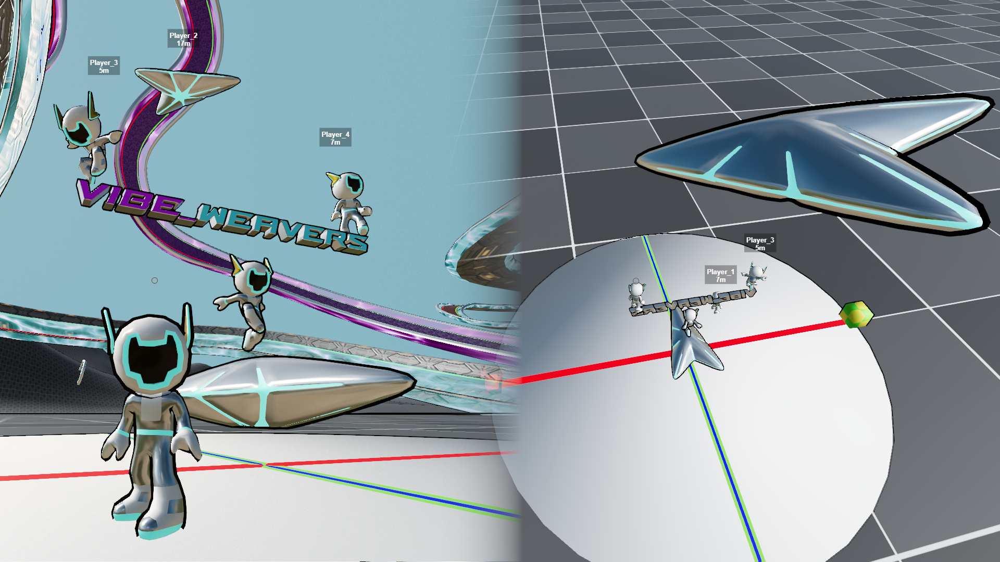

P2P Multiplayer Lobby
You are the Host
Share this ID with your friends:
Waiting for network ID...
Connected Players:
Loading...
WASD: Move | SPACE: Jump | MOUSE: Look
H: Enter/Exit Podracer | R: Respawn
(Click to lock mouse after loading in FPS mode)
-- FPS
Speed: 0.0 km/h
Altitude: 0.0 m
Thrust: 0%
Left Mouse: Accept | Right Mouse: Cancel
PREPARE
00:00.000